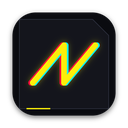

Tonwerk Analog
aumu TwAn Bvlp
Der analoge Synth aus Tonwerk im Browser, als Plugin. Klänge aus Tonwerk klingen hier wie dort.
- Zwei Oszillatoren mit Puls und PWM, dazu Rauschen
- Tiefpass, Hochpass und Bandpass mit eigener Hüllkurve
- Wavefolder und Sample & Hold, LFO auch im Songtempo
- Delay und Hall eingebaut, 16 Stimmen